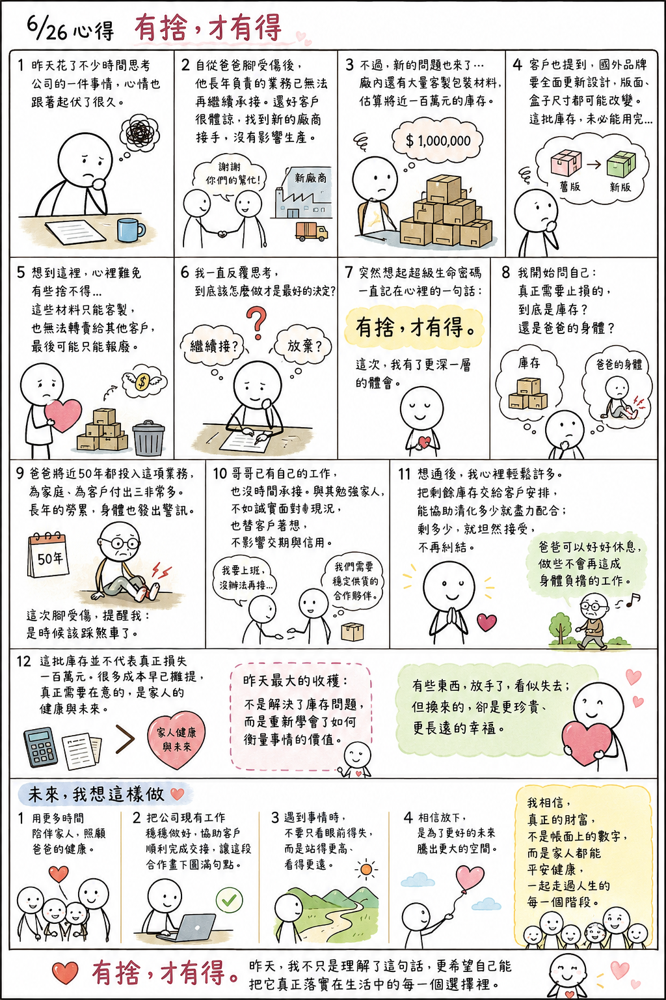

日期：2026/06/26

昨天花了不少時間思考公司的一件事情，心情也跟著起伏了很久。
自從爸爸腳受傷之後，公司有一部分長年由爸爸負責的業務，已經無法再繼續承接。還好客戶非常體諒，也及時找到新的合作廠商接手，才沒有影響後續的生產。
不過，新的問題也隨之而來。因為廠內目前還存放著大量專屬於這家客戶的包裝材料，估算起來將近一百萬元的庫存。而最近客戶也提到，國外的品牌端正好想趁這次機會全面更新產品設計，不只是印刷版面，連盒子的尺寸、規格都有可能重新調整。
也就是說，這批庫存未必能夠全部消化完。想到這裡，心裡難免有些捨不得。
畢竟看著帳面上一百多萬元的庫存，如果最後無法使用，就只能報廢，因為這些材料都是客製化規格，也不可能轉賣給其他客戶。昨天我一直反覆思考，到底該怎麼做才是最好的決定。
就在思考的過程中，我忽然想起自己學習《超級生命密碼》這些年，一句一直放在心裡的話：「有捨，才有得。」以前看到這句話，總覺得是在提醒自己放下執著。昨天，我卻有了更深一層的體會。
我開始問自己：真正需要止損的，到底是這一百多萬元的庫存？還是爸爸的身體？
爸爸從二十幾歲開始做這份工作，一直到現在七十多歲，將近五十年的歲月都投入在這項業務上。一路走來，他為家庭、為客戶付出了非常多，但也因為長年累積的勞累，身體開始發出警訊。這次腳受傷，也讓我重新思考，是不是到了該踩煞車的時候。
如果為了捨不得眼前的庫存，繼續勉強爸爸做下去，未來要付出的，可能就不是一百萬元，而是健康，甚至是更多無法挽回的代價。
再仔細想想，哥哥已經有自己的工作，也沒有多餘的時間可以承接這塊業務。與其勉強家人接手，不如誠實面對現況，也替客戶著想，讓他們能找到穩定供貨的合作夥伴，不至於因為我們而影響交期與信用。
想通之後，我心裡突然輕鬆了許多。我決定把剩餘庫存交給客戶安排，能協助消化多少就盡力配合；至於最後還剩多少，就坦然接受，不再一直糾結。
因為我發現，真正得到的，不是帳面上的數字，而是爸爸終於可以放下肩上的重擔，好好休息，做一些不會再造成身體負擔的工作。
其實仔細分析後，這批庫存並不代表真正損失了一百萬元。很多成本早已隨著多年生產逐漸攤提，帳面上的數字雖然看起來驚人，打從心底明白真正需要在意的，並不是那些材料，而是家人的健康與未來。
昨天最大的收穫，不是解決了庫存問題，而是重新學會了如何衡量事情的價值。有些東西，放手了，看似失去；但換來的，卻是更珍貴、更長遠的幸福。
經過這件事情，我也提醒自己，人生每一個階段都有不同的責任與課題。爸爸年輕時努力工作，用自己的雙手撐起家庭；如今年紀漸長，身體也開始提醒他該放慢腳步。這時候，讓爸爸安心休息，不再勉強自己，其實也是家人共同要學習的一門功課。
接下來，我希望自己把更多心力放在陪伴家人、照顧爸爸的健康，也把公司現有的工作穩穩做好，協助客戶順利完成交接，讓這段合作畫下一個圓滿的句點。
我也想提醒自己，遇到事情時，不要只看眼前的得失，而是站得更高、看得更遠。很多時候，我們以為失去了什麼，但或許正是在為未來騰出更大的空間。
正如導師常提醒我們，人生很多事情不能只看眼前的結果，而要看整體、看長遠。
如果因為這次的放下，換來爸爸更健康的身體、更安心的生活，也讓客戶能夠穩定發展，那麼這個決定，就是值得的。我相信，真正的財富，從來不只是帳面上的數字，而是家人都能平安健康，一起走過人生的每一個階段。
「有捨，才有得。」
今天，我不只是理解了這句話，更希望自己能把它真正落實在生活中的每一個選擇裡。